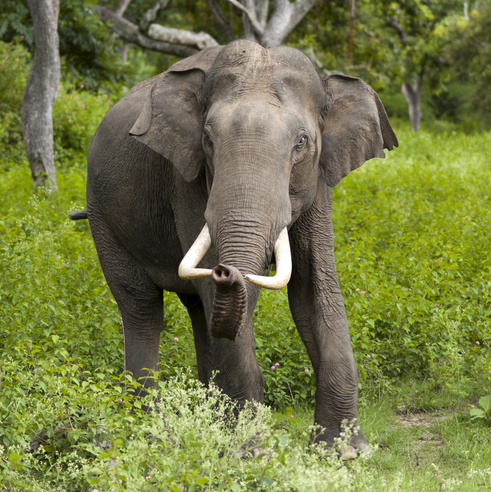

aziatische olifant
Elephas maximus

Rebecca
(vrouwtje)
Geboortedatum
09-10-1998
Datum opgevangen
02-12-2003
Rebecca draagt een gruwelijk verleden met haar mee. Als jong dier werd ze door stropers uit haar nest geroofd, terwijl haar moeder meedogenloos werd gedood. Vervolgens bracht ze jarenlang haar dagen door in een kille, betonnen kooi van slechts 2 bij 7 meter, bij een hotel in Albanië.
Verzorging kreeg ze niet, en haar enige voedsel bestond uit de resten van hotelmaaltijden. Water om zich te wassen was er niet, net zomin als bomen om in te klimmen, gras om over te lopen of een plek om putten te graven. Slechts een troosteloze betonnen vloer, besmeurd met uitwerpselen, was haar wereld.